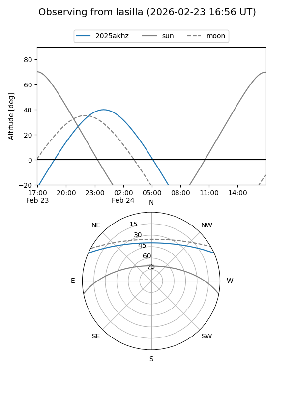
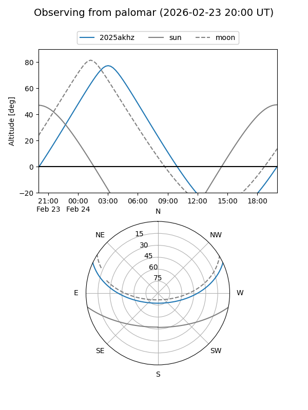

2025akhz
Target 2025akhz at 2025-12-31 00:01
Aliases and brokers:
FINK:
Lasair:
ALeRCE:
TNS:
YSE:
alt names
ZTF25achurhy (ztf,fink_ztf)
2025akhz (tns,yse)
PS25kzj (panstarrs)
Coordinates:
equatorial (ra, dec) = 81.9346,+20.71754
equatorial (HMS+DMS) = 05:27:44.29,+20:43:03.14
galactic (l, b) = (184.7973,-7.81593)
Flags:
Photometry:
last ztfr=20.34
2 ztfr detections
Lightcurve

Visibility


Additional plots